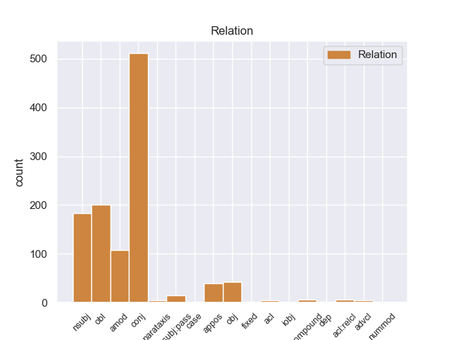
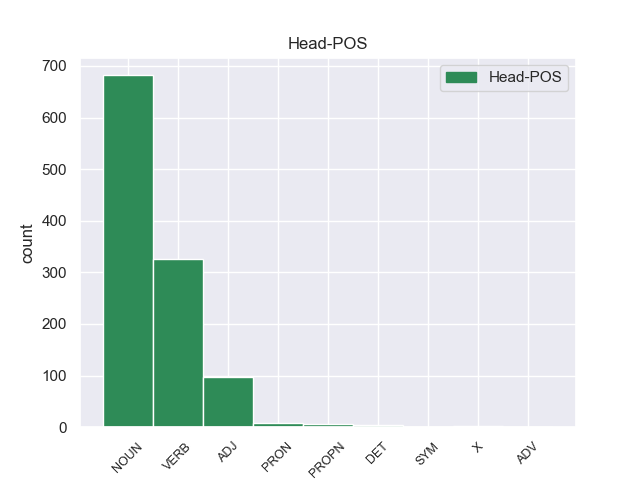
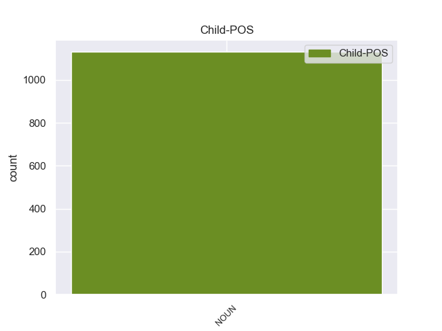

Distribution of features within this leaf



Agreement Rules sorted by frequency.
- When the dependent token is the conjunct(conj) of the head token, and the dependent token is NOUN.
1 Αυτό _ _ _ _ 0 _ _ _
2 μπορεί _ _ _ _ 0 _ _ _
3 να _ _ _ _ 0 _ _ _
4 μην _ _ _ _ 0 _ _ _
5 οδηγήσει _ _ _ _ 0 _ _ _
6 σ _ _ _ _ 0 _ _ _
7 τη _ _ _ _ 0 _ _ _
8 λήξη λήξη NOUN _ Gender=Fem|Number=Sing 0 _ _ _
9 του _ _ _ _ 0 _ _ _
10 εν _ _ _ _ 0 _ _ _
11 λόγω _ _ _ _ 0 _ _ _
12 ζητήματος _ _ _ _ 0 _ _ _
13 αλλά _ _ _ _ 0 _ _ _
14 , _ _ _ _ 0 _ _ _
15 σ _ _ _ _ 0 _ _ _
16 τη _ _ _ _ 0 _ _ _
17 μορφή μορφή NOUN _ Gender=Fem|Number=Sing 8 conj _ _
18 υπό _ _ _ _ 0 _ _ _
19 την _ _ _ _ 0 _ _ _
20 οποία _ _ _ _ 0 _ _ _
21 την _ _ _ _ 0 _ _ _
22 λάβαμε _ _ _ _ 0 _ _ _
23 , _ _ _ _ 0 _ _ _
24 αυτή _ _ _ _ 0 _ _ _
25 η _ _ _ _ 0 _ _ _
26 αίτηση _ _ _ _ 0 _ _ _
27 άρσης _ _ _ _ 0 _ _ _
28 της _ _ _ _ 0 _ _ _
29 ασυλίας _ _ _ _ 0 _ _ _
30 ήταν _ _ _ _ 0 _ _ _
31 , _ _ _ _ 0 _ _ _
32 κατά _ _ _ _ 0 _ _ _
33 την _ _ _ _ 0 _ _ _
34 άποψη _ _ _ _ 0 _ _ _
35 της _ _ _ _ 0 _ _ _
36 Επιτροπής _ _ _ _ 0 _ _ _
37 Νομικών _ _ _ _ 0 _ _ _
38 Θεμάτων _ _ _ _ 0 _ _ _
39 , _ _ _ _ 0 _ _ _
40 απαράδεκτη _ _ _ _ 0 _ _ _
41 , _ _ _ _ 0 _ _ _
42 άποψη _ _ _ _ 0 _ _ _
43 την _ _ _ _ 0 _ _ _
44 οποία _ _ _ _ 0 _ _ _
45 συνιστώ _ _ _ _ 0 _ _ _
46 σ _ _ _ _ 0 _ _ _
47 το _ _ _ _ 0 _ _ _
48 Σώμα _ _ _ _ 0 _ _ _
49 να _ _ _ _ 0 _ _ _
50 υιοθετήσει _ _ _ _ 0 _ _ _
51 . _ _ _ _ 0 _ _ _
1 πρόκειται _ _ _ _ 0 _ _ _
2 για _ _ _ _ 0 _ _ _
3 αυτό _ _ _ _ 0 _ _ _
4 το _ _ _ _ 0 _ _ _
5 οποίο _ _ _ _ 0 _ _ _
6 αποκαλύφθηκε _ _ _ _ 0 _ _ _
7 κατά _ _ _ _ 0 _ _ _
8 τη _ _ _ _ 0 _ _ _
9 διάρκεια _ _ _ _ 0 _ _ _
10 αυτής _ _ _ _ 0 _ _ _
11 της _ _ _ _ 0 _ _ _
12 διαδικασίας _ _ _ _ 0 _ _ _
13 , _ _ _ _ 0 _ _ _
14 ότι _ _ _ _ 0 _ _ _
15 ο _ _ _ _ 0 _ _ _
16 Εισαγγελέας _ _ _ _ 0 _ _ _
17 κάποια _ _ _ _ 0 _ _ _
18 στιγμή _ _ _ _ 0 _ _ _
19 ζήτησε _ _ _ _ 0 _ _ _
20 από _ _ _ _ 0 _ _ _
21 την _ _ _ _ 0 _ _ _
22 Πρόεδρο _ _ _ _ 0 _ _ _
23 του _ _ _ _ 0 _ _ _
24 Σώματος _ _ _ _ 0 _ _ _
25 , _ _ _ _ 0 _ _ _
26 την _ _ _ _ 0 _ _ _
27 προκάτοχό _ _ _ _ 0 _ _ _
28 σας _ _ _ _ 0 _ _ _
29 , _ _ _ _ 0 _ _ _
30 λεπτομέρειες _ _ _ _ 0 _ _ _
31 για _ _ _ _ 0 _ _ _
32 την _ _ _ _ 0 _ _ _
33 ψήφο _ _ _ _ 0 _ _ _
34 που _ _ _ _ 0 _ _ _
35 έχουν _ _ _ _ 0 _ _ _
36 δώσει δώσεr VERB _ Gender=Masc|Number=Sing|Tense=Past|VerbForm=Part 0 _ _ _
37 οι _ _ _ _ 0 _ _ _
38 δύο _ _ _ _ 0 _ _ _
39 συγκεκριμένοι _ _ _ _ 0 _ _ _
40 βουλευτές βουλευτ NOUN _ Gender=Masc|Number=Plur 36 nsubj _ _
41 προκειμένου _ _ _ _ 0 _ _ _
42 να _ _ _ _ 0 _ _ _
43 διευκρινιστεί _ _ _ _ 0 _ _ _
44 περαιτέρω _ _ _ _ 0 _ _ _
45 η _ _ _ _ 0 _ _ _
46 πιθανότητα _ _ _ _ 0 _ _ _
47 να _ _ _ _ 0 _ _ _
48 είχαν _ _ _ _ 0 _ _ _
49 ασκήσει _ _ _ _ 0 _ _ _
50 αθέμιτη _ _ _ _ 0 _ _ _
51 επιρροή _ _ _ _ 0 _ _ _
52 . _ _ _ _ 0 _ _ _
1 Όμως _ _ _ _ 0 _ _ _
2 , _ _ _ _ 0 _ _ _
3 ο _ _ _ _ 0 _ _ _
4 Υπουργός _ _ _ _ 0 _ _ _
5 Δικαιοσύνης _ _ _ _ 0 _ _ _
6 διαβίβασε _ _ _ _ 0 _ _ _
7 την _ _ _ _ 0 _ _ _
8 αίτηση _ _ _ _ 0 _ _ _
9 άρσης _ _ _ _ 0 _ _ _
10 της _ _ _ _ 0 _ _ _
11 ασυλίας _ _ _ _ 0 _ _ _
12 , _ _ _ _ 0 _ _ _
13 συνοδευόμενη συνοδευόμενo VERB _ Gender=Fem|Number=Sing|VerbForm=Part 0 _ _ _
14 από _ _ _ _ 0 _ _ _
15 τις _ _ _ _ 0 _ _ _
16 διαβιβαστικές _ _ _ _ 0 _ _ _
17 επιστολές επιστολέ NOUN _ Gender=Fem|Number=Plur 13 obl _ _
18 τόσο _ _ _ _ 0 _ _ _
19 του _ _ _ _ 0 _ _ _
20 Εισαγγελέα _ _ _ _ 0 _ _ _
21 Πλημμελειοδικών _ _ _ _ 0 _ _ _
22 όσο _ _ _ _ 0 _ _ _
23 και _ _ _ _ 0 _ _ _
24 του _ _ _ _ 0 _ _ _
25 Εισαγγελέα _ _ _ _ 0 _ _ _
26 Εφετών _ _ _ _ 0 _ _ _
27 , _ _ _ _ 0 _ _ _
28 χωρίς _ _ _ _ 0 _ _ _
29 να _ _ _ _ 0 _ _ _
30 προβαίνει _ _ _ _ 0 _ _ _
31 σε _ _ _ _ 0 _ _ _
32 κανέναν _ _ _ _ 0 _ _ _
33 σχολιασμό _ _ _ _ 0 _ _ _
34 . _ _ _ _ 0 _ _ _
1 Είναι _ _ _ _ 0 _ _ _
2 σημαντικό _ _ _ _ 0 _ _ _
3 να _ _ _ _ 0 _ _ _
4 υπογραμμίσω _ _ _ _ 0 _ _ _
5 το _ _ _ _ 0 _ _ _
6 γεγονός _ _ _ _ 0 _ _ _
7 ότι _ _ _ _ 0 _ _ _
8 και _ _ _ _ 0 _ _ _
9 οι _ _ _ _ 0 _ _ _
10 δύο _ _ _ _ 0 _ _ _
11 βουλευτές _ _ _ _ 0 _ _ _
12 διατρανώνουν _ _ _ _ 0 _ _ _
13 σθεναρά _ _ _ _ 0 _ _ _
14 την _ _ _ _ 0 _ _ _
15 αθωότητά _ _ _ _ 0 _ _ _
16 τους _ _ _ _ 0 _ _ _
17 και _ _ _ _ 0 _ _ _
18 καταγγέλλουν _ _ _ _ 0 _ _ _
19 αυτό _ _ _ _ 0 _ _ _
20 που _ _ _ _ 0 _ _ _
21 οι _ _ _ _ 0 _ _ _
22 ίδιοι _ _ _ _ 0 _ _ _
23 θεωρούν _ _ _ _ 0 _ _ _
24 καταχρήσεις _ _ _ _ 0 _ _ _
25 σ _ _ _ _ 0 _ _ _
26 τη _ _ _ _ 0 _ _ _
27 διαδικασία διαδικασία NOUN _ Gender=Fem|Number=Sing 0 _ _ _
28 δίωξης δίωξης NOUN _ Gender=Fem|Number=Sing 27 amod _ _
29 . _ _ _ _ 0 _ _ _
1 Η _ _ _ _ 0 _ _ _
2 Ρωσία _ _ _ _ 0 _ _ _
3 υπέδειξε _ _ _ _ 0 _ _ _
4 τον _ _ _ _ 0 _ _ _
5 γιό γιό NOUN _ Gender=Masc|Number=Sing 0 _ _ _
6 του _ _ _ _ 0 _ _ _
7 βασιλιά _ _ _ _ 0 _ _ _
8 των _ _ _ _ 0 _ _ _
9 Ελλήνων _ _ _ _ 0 _ _ _
10 Γεωργίου _ _ _ _ 0 _ _ _
11 του _ _ _ _ 0 _ _ _
12 Α' _ _ _ _ 0 _ _ _
13 , _ _ _ _ 0 _ _ _
14 τον _ _ _ _ 0 _ _ _
15 πρίγκιπα πρίγκιπα NOUN _ Gender=Masc|Number=Sing 5 appos _ _
16 Γεώργιο _ _ _ _ 0 _ _ _
17 , _ _ _ _ 0 _ _ _
18 ο _ _ _ _ 0 _ _ _
19 οποίος _ _ _ _ 0 _ _ _
20 και _ _ _ _ 0 _ _ _
21 επελέγη _ _ _ _ 0 _ _ _
22 τελικά _ _ _ _ 0 _ _ _
23 . _ _ _ _ 0 _ _ _
1 Οι _ _ _ _ 0 _ _ _
2 νέοι _ _ _ _ 0 _ _ _
3 Κινέζοι _ _ _ _ 0 _ _ _
4 άποικοι _ _ _ _ 0 _ _ _
5 έχουν _ _ _ _ 0 _ _ _
6 δημιουργήσει δημιουργήσει VERB _ Gender=Masc|Number=Sing|Tense=Past|VerbForm=Part 0 _ _ _
7 μία _ _ _ _ 0 _ _ _
8 εναλλασσόμενη _ _ _ _ 0 _ _ _
9 κοινωνία _ _ _ _ 0 _ _ _
10 : _ _ _ _ 0 _ _ _
11 ένα _ _ _ _ 0 _ _ _
12 κινεζικό _ _ _ _ 0 _ _ _
13 απαρτχάιντ απαρτχάιντ NOUN _ Gender=Masc|Number=Sing 6 obj _ _
14 το _ _ _ _ 0 _ _ _
15 οποίο _ _ _ _ 0 _ _ _
16 , _ _ _ _ 0 _ _ _
17 μέσω _ _ _ _ 0 _ _ _
18 της _ _ _ _ 0 _ _ _
19 άρνησης _ _ _ _ 0 _ _ _
20 ίσων _ _ _ _ 0 _ _ _
21 κοινωνικών _ _ _ _ 0 _ _ _
22 και _ _ _ _ 0 _ _ _
23 οικονομικών _ _ _ _ 0 _ _ _
24 δικαιωμάτων _ _ _ _ 0 _ _ _
25 σ _ _ _ _ 0 _ _ _
26 την _ _ _ _ 0 _ _ _
27 ίδια _ _ _ _ 0 _ _ _
28 μας _ _ _ _ 0 _ _ _
29 τη _ _ _ _ 0 _ _ _
30 γη _ _ _ _ 0 _ _ _
31 , _ _ _ _ 0 _ _ _
32 προσπαθεί _ _ _ _ 0 _ _ _
33 να _ _ _ _ 0 _ _ _
34 μας _ _ _ _ 0 _ _ _
35 καταβάλει _ _ _ _ 0 _ _ _
36 και _ _ _ _ 0 _ _ _
37 να _ _ _ _ 0 _ _ _
38 μας _ _ _ _ 0 _ _ _
39 απορροφήσει _ _ _ _ 0 _ _ _
40 . _ _ _ _ 0 _ _ _
1 El _ _ _ _ 0 _ _ _
2 asturiano _ _ _ _ 0 _ _ _
3 gusta _ _ _ _ 0 _ _ _
4 a _ _ _ _ 0 _ _ _
5 Abramovich _ _ _ _ 0 _ _ _
6 y _ _ _ _ 0 _ _ _
7 viene _ _ _ _ 0 _ _ _
8 recomendado _ _ _ _ 0 _ _ _
9 y _ _ _ _ 0 _ _ _
10 el _ _ _ _ 0 _ _ _
11 navarro navarro NOUN _ Gender=Masc|Number=Sing 13 nsubj:pass _ _
12 es _ _ _ _ 0 _ _ _
13 seguido seguido VERB _ Gender=Masc|Number=Sing|VerbForm=Part 0 _ _ _
14 de _ _ _ _ 0 _ _ _
15 cerca _ _ _ _ 0 _ _ _
16 por _ _ _ _ 0 _ _ _
17 Ferguson _ _ _ _ 0 _ _ _
18 según _ _ _ _ 0 _ _ _
19 AS _ _ _ _ 0 _ _ _
20 . _ _ _ _ 0 _ _ _
1 Σ _ _ _ _ 0 _ _ _
2 το _ _ _ _ 0 _ _ _
3 νομοσχέδιο _ _ _ _ 0 _ _ _
4 προβλέπεται _ _ _ _ 0 _ _ _
5 τα _ _ _ _ 0 _ _ _
6 ποσά _ _ _ _ 0 _ _ _
7 να _ _ _ _ 0 _ _ _
8 μπαίνουν _ _ _ _ 0 _ _ _
9 σε _ _ _ _ 0 _ _ _
10 ειδικό _ _ _ _ 0 _ _ _
11 κωδικό _ _ _ _ 0 _ _ _
12 και _ _ _ _ 0 _ _ _
13 να _ _ _ _ 0 _ _ _
14 διατίθενται _ _ _ _ 0 _ _ _
15 για _ _ _ _ 0 _ _ _
16 ειδικούς _ _ _ _ 0 _ _ _
17 σκοπούς _ _ _ _ 0 _ _ _
18 στήριξης _ _ _ _ 0 _ _ _
19 ευάλωτων _ _ _ _ 0 _ _ _
20 κοινωνικών _ _ _ _ 0 _ _ _
21 ομάδων _ _ _ _ 0 _ _ _
22 σ _ _ _ _ 0 _ _ _
23 τα _ _ _ _ 0 _ _ _
24 θέματα _ _ _ _ 0 _ _ _
25 υγείας _ _ _ _ 0 _ _ _
26 , _ _ _ _ 0 _ _ _
27 εκπαίδευσης _ _ _ _ 0 _ _ _
28 και _ _ _ _ 0 _ _ _
29 δια _ _ _ _ 0 _ _ _
30 βίου βίου NOUN _ Gender=Fem|Number=Sing 0 _ _ _
31 μάθησης μάθησης NOUN _ Gender=Fem|Number=Sing 30 compound _ _
32 . _ _ _ _ 0 _ _ _
1 Κατά _ _ _ _ 0 _ _ _
2 τη _ _ _ _ 0 _ _ _
3 δική _ _ _ _ 0 _ _ _
4 μου _ _ _ _ 0 _ _ _
5 άποψη _ _ _ _ 0 _ _ _
6 αποδείχθηκε _ _ _ _ 0 _ _ _
7 σαφώς _ _ _ _ 0 _ _ _
8 ότι _ _ _ _ 0 _ _ _
9 η _ _ _ _ 0 _ _ _
10 συμφωνία _ _ _ _ 0 _ _ _
11 μεταξύ _ _ _ _ 0 _ _ _
12 Επιτροπής _ _ _ _ 0 _ _ _
13 και _ _ _ _ 0 _ _ _
14 Κοινοβουλίου _ _ _ _ 0 _ _ _
15 κατέστησε _ _ _ _ 0 _ _ _
16 δυνατό _ _ _ _ 0 _ _ _
17 αυτόν _ _ _ _ 0 _ _ _
18 τον _ _ _ _ 0 _ _ _
19 τρόπο τρόπο NOUN _ Gender=Masc|Number=Sing 0 _ _ _
20 χειρισμού χειρισμού NOUN _ Gender=Masc|Number=Sing 19 acl _ _
21 απόρρητων _ _ _ _ 0 _ _ _
22 πληροφοριών _ _ _ _ 0 _ _ _
23 . _ _ _ _ 0 _ _ _
1 Παρ' _ _ _ _ 0 _ _ _
2 όλα _ _ _ _ 0 _ _ _
3 αυτά _ _ _ _ 0 _ _ _
4 , _ _ _ _ 0 _ _ _
5 χαιρετίζω _ _ _ _ 0 _ _ _
6 τη _ _ _ _ 0 _ _ _
7 μεταστροφή _ _ _ _ 0 _ _ _
8 του _ _ _ _ 0 _ _ _
9 προέδρου _ _ _ _ 0 _ _ _
10 Μουσάραφ _ _ _ _ 0 _ _ _
11 και _ _ _ _ 0 _ _ _
12 την _ _ _ _ 0 _ _ _
13 υποστήριξή _ _ _ _ 0 _ _ _
14 του _ _ _ _ 0 _ _ _
15 προς _ _ _ _ 0 _ _ _
16 τις _ _ _ _ 0 _ _ _
17 Ηνωμένες _ _ _ _ 0 _ _ _
18 Πολιτείες _ _ _ _ 0 _ _ _
19 σ _ _ _ _ 0 _ _ _
20 τον _ _ _ _ 0 _ _ _
21 πόλεμο πόλεμο NOUN _ Gender=Masc|Number=Sing 0 _ _ _
22 που _ _ _ _ 0 _ _ _
23 έχουν _ _ _ _ 0 _ _ _
24 εξαπολύσει _ _ _ _ 0 _ _ _
25 εναντίον _ _ _ _ 0 _ _ _
26 της _ _ _ _ 0 _ _ _
27 τρομοκρατίας _ _ _ _ 0 _ _ _
28 , _ _ _ _ 0 _ _ _
29 ο _ _ _ _ 0 _ _ _
30 οποίος _ _ _ _ 0 _ _ _
31 οδήγησε _ _ _ _ 0 _ _ _
32 σ _ _ _ _ 0 _ _ _
33 την _ _ _ _ 0 _ _ _
34 ανατροπή _ _ _ _ 0 _ _ _
35 του _ _ _ _ 0 _ _ _
36 καθεστώτος _ _ _ _ 0 _ _ _
37 των _ _ _ _ 0 _ _ _
38 Ταλιμπάν _ _ _ _ 0 _ _ _
39 και _ _ _ _ 0 _ _ _
40 σ _ _ _ _ 0 _ _ _
41 την _ _ _ _ 0 _ _ _
42 εξάρθρωση _ _ _ _ 0 _ _ _
43 του _ _ _ _ 0 _ _ _
44 δικτύου _ _ _ _ 0 _ _ _
45 της _ _ _ _ 0 _ _ _
46 Αλ _ _ _ _ 0 _ _ _
47 Κάιντα _ _ _ _ 0 _ _ _
48 σ _ _ _ _ 0 _ _ _
49 το _ _ _ _ 0 _ _ _
50 Αφγανιστάν _ _ _ _ 0 _ _ _
51 , _ _ _ _ 0 _ _ _
52 αν _ _ _ _ 0 _ _ _
53 και _ _ _ _ 0 _ _ _
54 το _ _ _ _ 0 _ _ _
55 ενλόγω _ _ _ _ 0 _ _ _
56 καθεστώς _ _ _ _ 0 _ _ _
57 ήταν _ _ _ _ 0 _ _ _
58 σε _ _ _ _ 0 _ _ _
59 μεγάλο _ _ _ _ 0 _ _ _
60 βαθμό _ _ _ _ 0 _ _ _
61 δημιούργημα δημιούργημα NOUN _ Gender=Masc|Number=Sing 21 acl:relcl _ _
62 των _ _ _ _ 0 _ _ _
63 μυστικών _ _ _ _ 0 _ _ _
64 υπηρεσιών _ _ _ _ 0 _ _ _
65 του _ _ _ _ 0 _ _ _
66 Πακιστάν _ _ _ _ 0 _ _ _
67 . _ _ _ _ 0 _ _ _
1 οι _ _ _ _ 0 _ _ _
2 τιμές _ _ _ _ 0 _ _ _
3 έχουν _ _ _ _ 0 _ _ _
4 αυξηθεί αυξηθεί VERB _ Gender=Masc|Number=Sing|Tense=Past|VerbForm=Part 0 _ _ _
5 πολύ _ _ _ _ 0 _ _ _
6 , _ _ _ _ 0 _ _ _
7 παντού _ _ _ _ 0 _ _ _
8 , _ _ _ _ 0 _ _ _
9 γεγονός γεγονός NOUN _ Gender=Masc|Number=Sing 4 parataxis _ _
10 ιδιαίτερα _ _ _ _ 0 _ _ _
11 ανησυχητικό _ _ _ _ 0 _ _ _
12 , _ _ _ _ 0 _ _ _
13 κυρίως _ _ _ _ 0 _ _ _
14 για _ _ _ _ 0 _ _ _
15 τα _ _ _ _ 0 _ _ _
16 συνήθη _ _ _ _ 0 _ _ _
17 προϊόντα _ _ _ _ 0 _ _ _
18 πρώτης _ _ _ _ 0 _ _ _
19 ανάγκης _ _ _ _ 0 _ _ _
1 Sin _ _ _ _ 0 _ _ _
2 embargo _ _ _ _ 0 _ _ _
3 , _ _ _ _ 0 _ _ _
4 emitieron _ _ _ _ 0 _ _ _
5 una _ _ _ _ 0 _ _ _
6 declaración _ _ _ _ 0 _ _ _
7 el _ _ _ _ 0 _ _ _
8 6 _ _ _ _ 0 _ _ _
9 de _ _ _ _ 0 _ _ _
10 noviembre _ _ _ _ 0 _ _ _
11 , _ _ _ _ 0 _ _ _
12 una uno DET _ Definite=Ind|Gender=Fem|Number=Sing|PronType=Art 0 _ _ _
13 vez vez NOUN _ Gender=Fem|Number=Sing 12 fixed _ _
14 que _ _ _ _ 0 _ _ _
15 el _ _ _ _ 0 _ _ _
16 embargo _ _ _ _ 0 _ _ _
17 y _ _ _ _ 0 _ _ _
18 el _ _ _ _ 0 _ _ _
19 aumento _ _ _ _ 0 _ _ _
20 de _ _ _ _ 0 _ _ _
21 el _ _ _ _ 0 _ _ _
22 precio _ _ _ _ 0 _ _ _
23 ya _ _ _ _ 0 _ _ _
24 habían _ _ _ _ 0 _ _ _
25 comenzado _ _ _ _ 0 _ _ _
26 ; _ _ _ _ 0 _ _ _
1 Aunque _ _ _ _ 0 _ _ _
2 la _ _ _ _ 0 _ _ _
3 necesidad _ _ _ _ 0 _ _ _
4 de _ _ _ _ 0 _ _ _
5 emprender _ _ _ _ 0 _ _ _
6 la _ _ _ _ 0 _ _ _
7 conquista _ _ _ _ 0 _ _ _
8 contra _ _ _ _ 0 _ _ _
9 el _ _ _ _ 0 _ _ _
10 islam _ _ _ _ 0 _ _ _
11 de _ _ _ _ 0 _ _ _
12 Mallorca _ _ _ _ 0 _ _ _
13 se _ _ _ _ 0 _ _ _
14 había _ _ _ _ 0 _ _ _
15 proclamado _ _ _ _ 0 _ _ _
16 en _ _ _ _ 0 _ _ _
17 las _ _ _ _ 0 _ _ _
18 cortes _ _ _ _ 0 _ _ _
19 de _ _ _ _ 0 _ _ _
20 Tortosa _ _ _ _ 0 _ _ _
21 de _ _ _ _ 0 _ _ _
22 1225 _ _ _ _ 0 _ _ _
23 , _ _ _ _ 0 _ _ _
24 cuya _ _ _ _ 0 _ _ _
25 iniciativa _ _ _ _ 0 _ _ _
26 comenzó _ _ _ _ 0 _ _ _
27 con _ _ _ _ 0 _ _ _
28 el _ _ _ _ 0 _ _ _
29 fracasado _ _ _ _ 0 _ _ _
30 asedio _ _ _ _ 0 _ _ _
31 a _ _ _ _ 0 _ _ _
32 Peñíscola _ _ _ _ 0 _ _ _
33 a _ _ _ _ 0 _ _ _
34 el _ _ _ _ 0 _ _ _
35 no _ _ _ _ 0 _ _ _
36 contar _ _ _ _ 0 _ _ _
37 con _ _ _ _ 0 _ _ _
38 el _ _ _ _ 0 _ _ _
39 apoyo _ _ _ _ 0 _ _ _
40 aragonés _ _ _ _ 0 _ _ _
41 , _ _ _ _ 0 _ _ _
42 Jaime _ _ _ _ 0 _ _ _
43 I _ _ _ _ 0 _ _ _
44 tuvo _ _ _ _ 0 _ _ _
45 que _ _ _ _ 0 _ _ _
46 afrontar _ _ _ _ 0 _ _ _
47 en _ _ _ _ 0 _ _ _
48 1227 _ _ _ _ 0 _ _ _
49 una _ _ _ _ 0 _ _ _
50 nueva _ _ _ _ 0 _ _ _
51 revuelta _ _ _ _ 0 _ _ _
52 que _ _ _ _ 0 _ _ _
53 quedó _ _ _ _ 0 _ _ _
54 sofocada _ _ _ _ 0 _ _ _
55 gracias gracia NOUN _ Gender=Fem|Number=Plur 58 case _ _
56 a _ _ _ _ 0 _ _ _
57 la _ _ _ _ 0 _ _ _
58 intervención intervención NOUN _ Gender=Fem|Number=Sing 0 _ _ _
59 de _ _ _ _ 0 _ _ _
60 Poncio _ _ _ _ 0 _ _ _
61 de _ _ _ _ 0 _ _ _
62 Torrella _ _ _ _ 0 _ _ _
63 , _ _ _ _ 0 _ _ _
64 por _ _ _ _ 0 _ _ _
65 entonces _ _ _ _ 0 _ _ _
66 obispo _ _ _ _ 0 _ _ _
67 de _ _ _ _ 0 _ _ _
68 la _ _ _ _ 0 _ _ _
69 comarca _ _ _ _ 0 _ _ _
70 de _ _ _ _ 0 _ _ _
71 Tortosa _ _ _ _ 0 _ _ _
72 . _ _ _ _ 0 _ _ _
1 La _ _ _ _ 0 _ _ _
2 decisión _ _ _ _ 0 _ _ _
3 ayer _ _ _ _ 0 _ _ _
4 de _ _ _ _ 0 _ _ _
5 el _ _ _ _ 0 _ _ _
6 Banco _ _ _ _ 0 _ _ _
7 Popular _ _ _ _ 0 _ _ _
8 de _ _ _ _ 0 _ _ _
9 China _ _ _ _ 0 _ _ _
10 de _ _ _ _ 0 _ _ _
11 incrementar _ _ _ _ 0 _ _ _
12 en _ _ _ _ 0 _ _ _
13 50 _ _ _ _ 0 _ _ _
14 puntos _ _ _ _ 0 _ _ _
15 básicos _ _ _ _ 0 _ _ _
16 la _ _ _ _ 0 _ _ _
17 cuota _ _ _ _ 0 _ _ _
18 de _ _ _ _ 0 _ _ _
19 reservas _ _ _ _ 0 _ _ _
20 mínima _ _ _ _ 0 _ _ _
21 para _ _ _ _ 0 _ _ _
22 la _ _ _ _ 0 _ _ _
23 banca _ _ _ _ 0 _ _ _
24 había _ _ _ _ 0 _ _ _
25 dado dar VERB _ Gender=Masc|Number=Sing|Tense=Past|VerbForm=Part 0 _ _ _
26 un _ _ _ _ 0 _ _ _
27 tono _ _ _ _ 0 _ _ _
28 negativo _ _ _ _ 0 _ _ _
29 a _ _ _ _ 0 _ _ _
30 el _ _ _ _ 0 _ _ _
31 mercado mercado NOUN _ Gender=Masc|Number=Sing 25 iobj _ _
32 neoyorquino _ _ _ _ 0 _ _ _
33 . _ _ _ _ 0 _ _ _
1 Si _ _ _ _ 0 _ _ _
2 el _ _ _ _ 0 _ _ _
3 país _ _ _ _ 0 _ _ _
4 debe _ _ _ _ 0 _ _ _
5 solicitar _ _ _ _ 0 _ _ _
6 el _ _ _ _ 0 _ _ _
7 ingreso _ _ _ _ 0 _ _ _
8 en _ _ _ _ 0 _ _ _
9 la _ _ _ _ 0 _ _ _
10 Unión _ _ _ _ 0 _ _ _
11 Europea _ _ _ _ 0 _ _ _
12 ha _ _ _ _ 0 _ _ _
13 sido _ _ _ _ 0 _ _ _
14 uno _ _ _ _ 0 _ _ _
15 de _ _ _ _ 0 _ _ _
16 los _ _ _ _ 0 _ _ _
17 temas tema NOUN _ Gender=Masc|Number=Plur 0 _ _ _
18 más _ _ _ _ 0 _ _ _
19 dominantes _ _ _ _ 0 _ _ _
20 y _ _ _ _ 0 _ _ _
21 divisivos _ _ _ _ 0 _ _ _
22 en _ _ _ _ 0 _ _ _
23 Noruega _ _ _ _ 0 _ _ _
24 debate debate NOUN _ Gender=Masc|Number=Sing 17 dep _ _
25 político _ _ _ _ 0 _ _ _
26 y _ _ _ _ 0 _ _ _
27 económico _ _ _ _ 0 _ _ _
28 desde _ _ _ _ 0 _ _ _
29 la _ _ _ _ 0 _ _ _
30 Segunda _ _ _ _ 0 _ _ _
31 Guerra _ _ _ _ 0 _ _ _
32 Mundial _ _ _ _ 0 _ _ _
33 . _ _ _ _ 0 _ _ _
1 Pelecanimimus _ _ _ _ 0 _ _ _
2 ( _ _ _ _ 0 _ _ _
3 gr. _ _ _ _ 0 _ _ _
4 " _ _ _ _ 0 _ _ _
5 imitador _ _ _ _ 0 _ _ _
6 de _ _ _ _ 0 _ _ _
7 pelícanos _ _ _ _ 0 _ _ _
8 " _ _ _ _ 0 _ _ _
9 ) _ _ _ _ 0 _ _ _
10 es _ _ _ _ 0 _ _ _
11 un _ _ _ _ 0 _ _ _
12 género _ _ _ _ 0 _ _ _
13 representado _ _ _ _ 0 _ _ _
14 por _ _ _ _ 0 _ _ _
15 una _ _ _ _ 0 _ _ _
16 única _ _ _ _ 0 _ _ _
17 especie _ _ _ _ 0 _ _ _
18 de _ _ _ _ 0 _ _ _
19 dinosaurio _ _ _ _ 0 _ _ _
20 terópodo _ _ _ _ 0 _ _ _
21 ornitomimosauriano _ _ _ _ 0 _ _ _
22 basal _ _ _ _ 0 _ _ _
23 , _ _ _ _ 0 _ _ _
24 que _ _ _ _ 0 _ _ _
25 vivió _ _ _ _ 0 _ _ _
26 a _ _ _ _ 0 _ _ _
27 principios _ _ _ _ 0 _ _ _
28 de _ _ _ _ 0 _ _ _
29 el _ _ _ _ 0 _ _ _
30 período _ _ _ _ 0 _ _ _
31 Cretácico _ _ _ _ 0 _ _ _
32 , _ _ _ _ 0 _ _ _
33 hace _ _ _ _ 0 _ _ _
34 algo _ _ _ _ 0 _ _ _
35 más _ _ _ _ 0 _ _ _
36 de _ _ _ _ 0 _ _ _
37 125 _ _ _ _ 0 _ _ _
38 millones millón NOUN _ Gender=Masc|Number=Plur 40 nummod _ _
39 de _ _ _ _ 0 _ _ _
40 años año NOUN _ Gender=Masc|Number=Plur 0 _ _ _
41 , _ _ _ _ 0 _ _ _
42 en _ _ _ _ 0 _ _ _
43 el _ _ _ _ 0 _ _ _
44 Barremiense _ _ _ _ 0 _ _ _
45 , _ _ _ _ 0 _ _ _
46 en _ _ _ _ 0 _ _ _
47 lo _ _ _ _ 0 _ _ _
48 que _ _ _ _ 0 _ _ _
49 es _ _ _ _ 0 _ _ _
50 hoy _ _ _ _ 0 _ _ _
51 Europa _ _ _ _ 0 _ _ _
52 . _ _ _ _ 0 _ _ _
1 Ως _ _ _ _ 0 _ _ _
2 εισηγήτρια εισηγήτρια NOUN _ Gender=Fem|Number=Sing 20 advcl _ _
3 της _ _ _ _ 0 _ _ _
4 εφαρμογής _ _ _ _ 0 _ _ _
5 τόσο _ _ _ _ 0 _ _ _
6 της _ _ _ _ 0 _ _ _
7 πρώτης _ _ _ _ 0 _ _ _
8 , _ _ _ _ 0 _ _ _
9 όσο _ _ _ _ 0 _ _ _
10 και _ _ _ _ 0 _ _ _
11 της _ _ _ _ 0 _ _ _
12 δεύτερης _ _ _ _ 0 _ _ _
13 τρέχουσας _ _ _ _ 0 _ _ _
14 φάσης _ _ _ _ 0 _ _ _
15 του _ _ _ _ 0 _ _ _
16 προγράμματος _ _ _ _ 0 _ _ _
17 ΣΩΚΡΑΤΗΣ _ _ _ _ 0 _ _ _
18 , _ _ _ _ 0 _ _ _
19 είμαι _ _ _ _ 0 _ _ _
20 ικανοποιημένη ικανοποιημένo ADJ _ Gender=Fem|Number=Sing|VerbForm=Part 0 _ _ _
21 με _ _ _ _ 0 _ _ _
22 αυτήν _ _ _ _ 0 _ _ _
23 τη _ _ _ _ 0 _ _ _
24 θετική _ _ _ _ 0 _ _ _
25 εξέλιξη _ _ _ _ 0 _ _ _
26 . _ _ _ _ 0 _ _ _
Disagree Examples:
1 Tellius _ _ _ _ 0 _ _ _
2 se _ _ _ _ 0 _ _ _
3 encuentra _ _ _ _ 0 _ _ _
4 dividida _ _ _ _ 0 _ _ _
5 en _ _ _ _ 0 _ _ _
6 varias _ _ _ _ 0 _ _ _
7 naciones _ _ _ _ 0 _ _ _
8 que _ _ _ _ 0 _ _ _
9 son _ _ _ _ 0 _ _ _
10 gobernadas gobernado VERB _ Gender=Fem|Number=Plur|Tense=Past|VerbForm=Part 0 _ _ _
11 por _ _ _ _ 0 _ _ _
12 beorcs beorcs NOUN _ Gender=Masc|Number=Sing 10 obl _ _
13 o _ _ _ _ 0 _ _ _
14 laguz _ _ _ _ 0 _ _ _
15 . _ _ _ _ 0 _ _ _
1 Un _ _ _ _ 0 _ _ _
2 observador _ _ _ _ 0 _ _ _
3 externo _ _ _ _ 0 _ _ _
4 puede _ _ _ _ 0 _ _ _
5 tomar _ _ _ _ 0 _ _ _
6 directamente _ _ _ _ 0 _ _ _
7 las _ _ _ _ 0 _ _ _
8 medidas medida NOUN _ Gender=Fem|Number=Plur 0 _ _ _
9 nomotéticas _ _ _ _ 0 _ _ _
10 ( _ _ _ _ 0 _ _ _
11 ejemplos _ _ _ _ 0 _ _ _
12 de _ _ _ _ 0 _ _ _
13 éstas _ _ _ _ 0 _ _ _
14 medidas _ _ _ _ 0 _ _ _
15 pueden _ _ _ _ 0 _ _ _
16 ser _ _ _ _ 0 _ _ _
17 el _ _ _ _ 0 _ _ _
18 peso peso NOUN _ Gender=Masc|Number=Sing 8 parataxis _ _
19 de _ _ _ _ 0 _ _ _
20 un _ _ _ _ 0 _ _ _
21 objeto _ _ _ _ 0 _ _ _
22 o _ _ _ _ 0 _ _ _
23 la _ _ _ _ 0 _ _ _
24 cantidad _ _ _ _ 0 _ _ _
25 de _ _ _ _ 0 _ _ _
26 veces _ _ _ _ 0 _ _ _
27 que _ _ _ _ 0 _ _ _
28 se _ _ _ _ 0 _ _ _
29 presenta _ _ _ _ 0 _ _ _
30 un _ _ _ _ 0 _ _ _
31 comportamiento _ _ _ _ 0 _ _ _
32 particular _ _ _ _ 0 _ _ _
33 ) _ _ _ _ 0 _ _ _
34 ; _ _ _ _ 0 _ _ _
1 Un _ _ _ _ 0 _ _ _
2 observador _ _ _ _ 0 _ _ _
3 externo _ _ _ _ 0 _ _ _
4 puede _ _ _ _ 0 _ _ _
5 tomar _ _ _ _ 0 _ _ _
6 directamente _ _ _ _ 0 _ _ _
7 las _ _ _ _ 0 _ _ _
8 medidas _ _ _ _ 0 _ _ _
9 nomotéticas _ _ _ _ 0 _ _ _
10 ( _ _ _ _ 0 _ _ _
11 ejemplos _ _ _ _ 0 _ _ _
12 de _ _ _ _ 0 _ _ _
13 éstas _ _ _ _ 0 _ _ _
14 medidas _ _ _ _ 0 _ _ _
15 pueden _ _ _ _ 0 _ _ _
16 ser _ _ _ _ 0 _ _ _
17 el _ _ _ _ 0 _ _ _
18 peso peso NOUN _ Gender=Masc|Number=Sing 0 _ _ _
19 de _ _ _ _ 0 _ _ _
20 un _ _ _ _ 0 _ _ _
21 objeto _ _ _ _ 0 _ _ _
22 o _ _ _ _ 0 _ _ _
23 la _ _ _ _ 0 _ _ _
24 cantidad cantidad NOUN _ Gender=Fem|Number=Sing 18 conj _ _
25 de _ _ _ _ 0 _ _ _
26 veces _ _ _ _ 0 _ _ _
27 que _ _ _ _ 0 _ _ _
28 se _ _ _ _ 0 _ _ _
29 presenta _ _ _ _ 0 _ _ _
30 un _ _ _ _ 0 _ _ _
31 comportamiento _ _ _ _ 0 _ _ _
32 particular _ _ _ _ 0 _ _ _
33 ) _ _ _ _ 0 _ _ _
34 ; _ _ _ _ 0 _ _ _
1 Una _ _ _ _ 0 _ _ _
2 masa _ _ _ _ 0 _ _ _
3 vegetal _ _ _ _ 0 _ _ _
4 que _ _ _ _ 0 _ _ _
5 , _ _ _ _ 0 _ _ _
6 a _ _ _ _ 0 _ _ _
7 el _ _ _ _ 0 _ _ _
8 secar secar VERB _ Gender=Masc|Number=Sing|VerbForm=Fin 0 _ _ _
9 se _ _ _ _ 0 _ _ _
10 con _ _ _ _ 0 _ _ _
11 las _ _ _ _ 0 _ _ _
12 elevadas _ _ _ _ 0 _ _ _
13 temperaturas temperatura NOUN _ Gender=Fem|Number=Plur 8 obl _ _
14 propias _ _ _ _ 0 _ _ _
15 de _ _ _ _ 0 _ _ _
16 los _ _ _ _ 0 _ _ _
17 meses _ _ _ _ 0 _ _ _
18 estivales _ _ _ _ 0 _ _ _
19 , _ _ _ _ 0 _ _ _
20 podría _ _ _ _ 0 _ _ _
21 facilitar _ _ _ _ 0 _ _ _
22 la _ _ _ _ 0 _ _ _
23 propagación _ _ _ _ 0 _ _ _
24 de _ _ _ _ 0 _ _ _
25 las _ _ _ _ 0 _ _ _
26 llamas _ _ _ _ 0 _ _ _
27 en _ _ _ _ 0 _ _ _
28 caso _ _ _ _ 0 _ _ _
29 de _ _ _ _ 0 _ _ _
30 incendio _ _ _ _ 0 _ _ _
31 forestal _ _ _ _ 0 _ _ _
32 . _ _ _ _ 0 _ _ _
1 Socialmente _ _ _ _ 0 _ _ _
2 el _ _ _ _ 0 _ _ _
3 consumo _ _ _ _ 0 _ _ _
4 de _ _ _ _ 0 _ _ _
5 carne _ _ _ _ 0 _ _ _
6 humana _ _ _ _ 0 _ _ _
7 es _ _ _ _ 0 _ _ _
8 considerado _ _ _ _ 0 _ _ _
9 aceptable _ _ _ _ 0 _ _ _
10 en _ _ _ _ 0 _ _ _
11 ocasiones ocasión NOUN _ Gender=Fem|Number=Plur 0 _ _ _
12 excepcionales _ _ _ _ 0 _ _ _
13 , _ _ _ _ 0 _ _ _
14 como _ _ _ _ 0 _ _ _
15 por _ _ _ _ 0 _ _ _
16 ejemplo _ _ _ _ 0 _ _ _
17 en _ _ _ _ 0 _ _ _
18 casos caso NOUN _ Gender=Masc|Number=Plur 11 conj _ _
19 de _ _ _ _ 0 _ _ _
20 naufragio _ _ _ _ 0 _ _ _
21 . _ _ _ _ 0 _ _ _